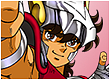
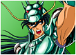
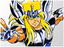
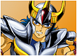
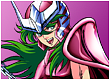

Seiya de Pégasos
"Pegasus" é um nome familiar, não é? É o cavalo voador do Hércules! Mas também é a força de Seiya. Por isso, todos os golpes que aplica terminam com o nome “pégaso”. O primeiro deles, "Meteoro de Pégaso", é um nome dramático para uma sucessão de socos bem dados. E o segundo, o "Cometa de Pégaso", se refere também a um soco poderoso. Já o "Turbilhão de Pégaso" é uma colisão giratória, ideal para acabar com inimigos que estejam se aproximando rapidamente.
Shiryu de Dragão
Senta que lá vem seis golpes! A força do dragão é tão potente que Shiryu poderia escolher vários jeitos de atacar e se defender. Começando com "Cólera do Dragão": quem gostaria de deixar um dragão irritado? É melhor ficar longe. Em seguida, o golpe "Dragão Voador". Sim, todo dragão voa, mas esse é um golpe especial, ideal para lutas aéreas. O golpe "Último Dragão" é invencível. Ninguém quer conhecer a fúria dele. E se a cólera de um dragão já seria um perigo, imagine a "Cólera dos 100 Dragões"! E ainda não acabou: o golpe "Excalibur" deixaria até o Rei Arthur morrendo de inveja. Mas nada que um "Chute do Dragão" não resolvesse.
Hyoga de Cisne
Esse é o único caso em que “yoga” se escreve com “h”! Bem diferente do clima zen e relaxante da ginástica, esse personagem tem quatro golpes em seu repertório. Todos eles são um oferecimento de sua força de cisne. O primeiro, "Círculo de Gelo", tem um nome esclarecedor. É um círculo de gelo para matar alguém de frio! O segundo golpe, "Pó de Diamante", cairia muito bem para fazer uma joia, mas é uma arma letal. O "Trovão Aurora Ataque" é a carta na manga que qualquer cavaleiro gostaria de ter. Até Thor, o Deus do Trovão, invejaria esse golpe! Por último, mas não menos importante, a "Execução Aurora". É provavelmente o último golpe que um inimigo gostaria de receber.
Ikki de Fênix
Todo mundo sabe que a fênix é conhecida principalmente por ressurgir das cinzas. Então, não surpreende que essa força conceda somente dois golpes ao Ikki. Ainda assim, são dois golpes importantes e eficientes: "Golpe Fantasma de Fênix" e "Ave de Fênix". Eu é que não gostaria de ser atingida por uma coisa que eu não posso ver, muito menos por uma ave imortal e agressiva.
Shun de Andrômeda
Se você achou que seis golpes já era muito, prepare-se: a força de Andrômeda concede onze golpes para Shun. Não poderíamos esperar menos de um Deus, não é? "Corrente de Andrômeda" e "Corrente Nebulosa" são os golpes para começar a batalha deixando os inimigos bem presos. Com a "Onda Relâmpago" e com a "Tempestade Nebulosa", más notícias estão na previsão do tempo para os malfeitores que saírem de casa. O "Defesa Circular" e o "Teia de Aranha de Andrômeda" são golpes ideais para transformar seu inimigo em uma mosca tonta. Se precisar de uma força, o "Rede de Andrômeda" e o "Espiral de Andrômeda" podem ser úteis. O "Bumerangue de Andrômeda" pode ser a pedida ideal para quem busca um golpe mais lúdico. Contra "Armadilha de Andrômeda" e com o "Grande Captura de Andrômeda", ninguém tem chance.